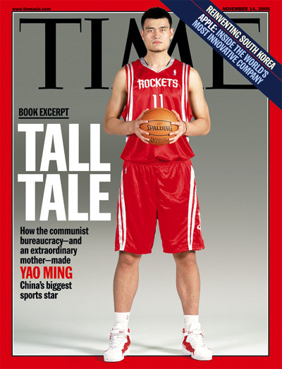

The Houtston Rockets chose Yao Ming as the first overall pick in the 2002 NBA Draft. He did not play with the Houston Rockets until after pre-season
though due to him playing for China in the FIBA World Championship.
Yao was voted to start for the West over O'Neal, who was coming off three consecutive NBA Finals MVP Awards. Yao received nearly a
quarter million more votes than O'Neal, and he became the first rookie to start in the All-Star Game since Grant Hill in 1995.
Yao finished his rookie season averaging 13.5 points and 8.2 rebounds per game, and was second in the NBA Rookie of the Year Award.
Also a unanimous pick for the NBA All-Rookie First Team selection and being voted the Sporting News Rookie of the Year.